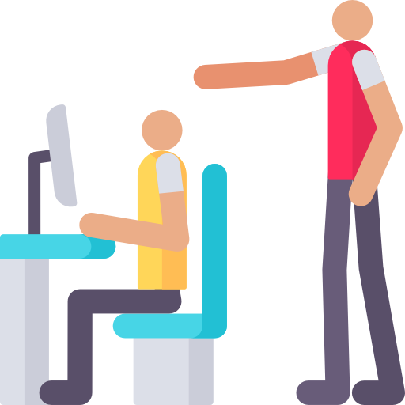

Humanizar al humano en la atención, la interacción, es un reto que la tecnologia hoy en día tiene, Voice Feeling consigue un balance adecaudo para que ninguna .
Un Arquitecto diseña casas, un Ingeniero las construye, Un chef prepara recetas un Mesero atiende a los clientes, Las empresas construyen negocios Voice Feeling los Humaniza.
 Cuando el soporte dejo de ser el soporte y se convirtio en un reproche, Reproche al estilo de la conversación, de la forma en que se transmite la informacion y el poco interes para entender a su interlocutor; premisas como pocas palabras, mucha emocion y escucha consciente se entrenan para conseguir que nuestro cerebro logre detectar los aspectos mas importantes a la hora de persuadir a otros.
 Un proceso
organizado, realizado con experiencia y juntando lo que cada interacción implica, es
la
receta para
contemplar los aspectos mas relevantes a la hora de poner en marcha planes de mejora en las
organizaciones ayudadados por la tecnologia .
Un proceso
organizado, realizado con experiencia y juntando lo que cada interacción implica, es
la
receta para
contemplar los aspectos mas relevantes a la hora de poner en marcha planes de mejora en las
organizaciones ayudadados por la tecnologia .
Nuestro cerebro ya nos da pistas de como se basan nuestras decisiones y no solamente como un instrumento de programación , sino como un instrumento de consciencia y de uso en los momentos de mayor tensión y prueba en la que los seres humanos nos vemos envueltos, que harias si un león te ataca? mi vision como biologo o como ingeniero tendria una reacción distinta y al final todo se resume en el interes emocional que este objeto me trae.
 Y si nuestro personal no
cuenta con la experiencia para hacer que el equipo responsa?, Que bueno que
si contamos con elementos de orientación a la forma de guiarlos esto nos ayude a generar un
vinculo
y al mismo tiempo responsabilidades en los resultados.
Y si nuestro personal no
cuenta con la experiencia para hacer que el equipo responsa?, Que bueno que
si contamos con elementos de orientación a la forma de guiarlos esto nos ayude a generar un
vinculo
y al mismo tiempo responsabilidades en los resultados.